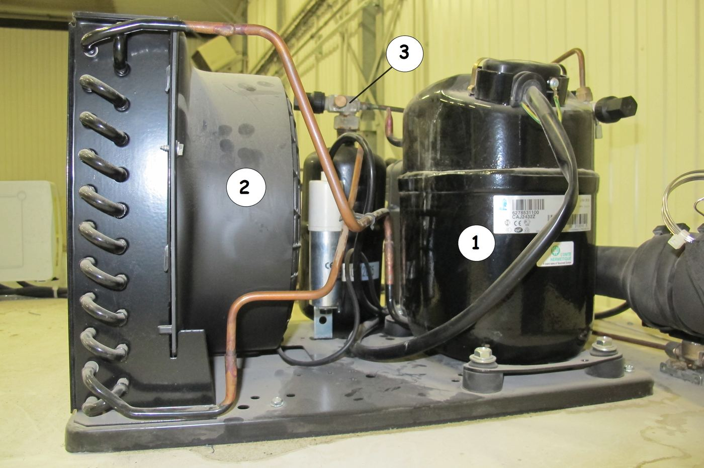
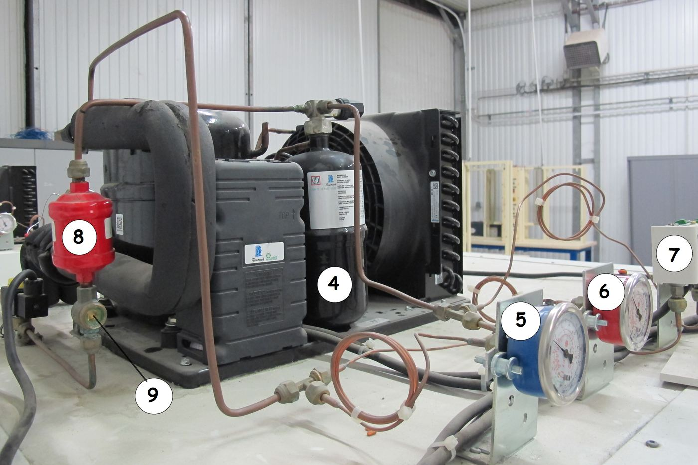
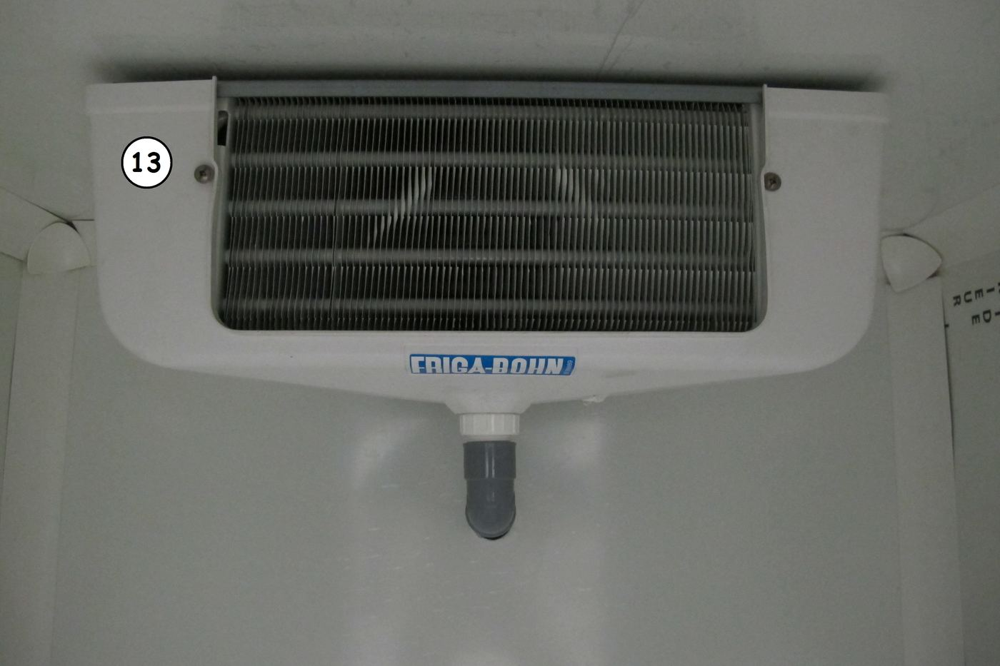

Observer avant de nommer · honnêteté de l'auto-positionnement
Compétence
Appui — aucune compétence positionnée module d'enrichissement du vocabulaire technique, en support des modules ateliers S3-F1, S3-F2, S3-E1, S3-E2 ; aucune grille remontée
Ce que ce document ajoute au cours élève
Ce document reprend exactement la même numérotation que le document élève
(postes 1 à 4, exercices 1 à 3) et y ajoute les réponses attendues, l'organisation matérielle des postes
tournants, la conduite minutée en 4 phases, les erreurs typiques et la différenciation. Le TP source (« TP 02 —
Les composants frigorifiques », 4 h, C1-Communiquer) est ici ramené à une théorie de 2 h : on identifie
et on donne la fonction (Bloom CAP 1-2 : citer, nommer, montrer), on ne réalise pas le schéma complet de
l'installation ni l'analyse fonctionnelle détaillée — ce travail reviendra plus tard dans la formation.
Méthode pédagogique du module
Postes tournants d'observation (méthode imposée par le cadrage S3, aucune
reprise d'une méthode déjà utilisée en S1/S2) : 4 photos réelles d'une installation frigorifique, extraites du
TP source, chacune montrant un groupe de composants repérés par des cercles blancs. L'élève observe et décrit
avant que le professeur ne nomme — c'est le principe « planter la notion » de la charte (observer →
nommer → expliciter). Si des composants réels hors service sont disponibles à l'atelier (dépose d'une machine
réformée), les ajouter au poste correspondant enrichit l'observation (manipulation en main) ; à confirmer par
le professeur selon le matériel disponible — les 4 photos suffisent si aucun composant n'est disponible.
Trame horaire — module 2 h (recomptée ligne à ligne)
Durée
Phase
Contenu
Module théorie — 2 h 00 (pas de préparation de chantier atelier)
10 min
1. Accroche
2 min : présentation du fil rouge (le pavillon du chantier va recevoir un climatiseur, il faut savoir reconnaître les composants d'une vraie installation). 3 min : projection/observation de la photo 1, question de départ notée individuellement (combien d'éléments différents en plus du compresseur et du condenseur). 3 min : rappel collectif express des 4 organes de la croix (S1-T1). 2 min : consigne de la découverte à venir (observer avant de nommer).
40 min
2. Découverte
32 min : rotation sur les 4 postes (4 groupes, ~6 élèves pour une classe de 24 ; adapter la taille de groupe à l'effectif réel), 8 min par poste (dont 1 min de rotation). Consigne unique : décrire ce qui est observé à chaque repère (forme, couleur, taille, position), sans donner de nom si l'élève ne le connaît pas encore. 8 min : mise en commun collective — le professeur projette les 4 photos corrigées et numérotées (voir feuilles 2-3 de ce document) et donne les 13 noms officiels, que les élèves recopient dans le tableau de la feuille 3 du document élève.
50 min
3. Application
Exercice 1 (15 min, dont 5 de correction) : associer les 9 composants à fonction sourcée à leur fonction (texte à trous / lettres). Exercice 2 (10 min, dont 5 de mise en commun orale) : hypothèses sur les 4 composants sans fonction officielle sourcée — ne pas valider une réponse comme définitive, accepter toute proposition cohérente avec l'observation. Exercice 3 (20 min, dont 5 de correction) : placer les 9 composants sur les branches de la croix du frigoriste (ligne liquide / ligne d'aspiration / au niveau du compresseur). 5 min : retour collectif, questions des élèves.
20 min
4. Synthèse / trace écrite
12 min : fiche mémo (tableau des 13 composants) complétée et corrigée collectivement — c'est la trace écrite de référence pour les ateliers à venir. 8 min : auto-positionnement 0-4 (appui, non noté) et clôture (rappel : ce vocabulaire sera réutilisé dès le prochain atelier).
Total : 10 + 40 + 50 + 20 = 120 min exactes, conforme à la
trame « Module THÉORIE — 2 h » du cadrage S3.
Question de départ — Combien d'éléments différents en plus du compresseur
et du condenseur ?
Réponse attendue : aucun chiffre exact n'est exigé en phase 1 (accepter toute estimation raisonnable,
de 3 à 10). L'objectif est de faire constater qu'une vraie installation comporte beaucoup plus que les
4 organes de la croix. La photo 1 (vue 1) comporte à elle seule 3 composants supplémentaires repérés.
Corrigé — Poste 1 (vue 1, 3 repères)

Corrigé numéroté — à projeter en mise en commun.
Repère (position observée)
N°
Nom officiel
Cercle en bas à droite, sur le gros cylindre noir
1
Compresseur
Cercle au centre, sur la roue à ailettes noire (ventilateur)
2
Condenseur
Cercle en haut à droite, relié à un petit raccord
3
Vanne de sortie du réservoir de liquide
Corrigé — Poste 2 (vue 2, 6 repères)

Corrigé numéroté — à projeter en mise en commun.
Repère (position observée)
N°
Nom officiel
Cercle sur le cylindre noir (au centre)
4
Réservoir de liquide
Cercle sur le cadran bleu
5
Manomètre haute pression (HP)
Cercle sur le cadran rouge
6
Manomètre basse pression (BP)
Cercle sur le petit boîtier, tout à droite
7
Pressostat combiné
Cercle sur le cylindre rouge (à gauche)
8
Filtre déshydrateur
Cercle en bas à gauche, relié à un petit raccord
9
Voyant liquide
Point de vigilance — Repères 5 et 6 : le corrigé source associe le
repère 5 au manomètre HP et le repère 6 au manomètre BP, tels que photographiés sur cette installation précise ;
ne pas énoncer de règle générale de couleur (le code couleur des manomètres — rouge/HP, bleu/BP — varie
selon le matériel et n'est pas confirmé sur cette photo précise). S'en tenir au numéro de repère.
Cercle en haut à gauche, relié à un raccord en laiton
10
Détendeur thermostatique
Cercle en bas à droite, sur le petit boîtier jaune et noir
11
Électrovanne
Cercle en haut à droite, relié à un tube isolé noir
12
Vanne d'aspiration du compresseur
Corrigé — Poste 4 (vue 4, 1 repère)

Corrigé numéroté — évaporateur ventilé de chambre froide.
Repère (position observée)
N°
Nom officiel
Cercle en haut à gauche du bloc blanc
13
Évaporateur
Point de vigilance — L'évaporateur de la photo 4 est un modèle ventilé
de chambre froide (marque visible sur l'appareil), différent en apparence du rectangle de la croix vu en S1 :
profiter de la mise en commun pour rappeler que la fonction (transformer le liquide en gaz en absorbant
la chaleur) reste la même quelle que soit la forme réelle de l'organe.
Liste officielle des 13 composants (à donner en mise en commun)
Aspire le fluide et le comprime : mise en circulation du fluide dans tout le circuit.
Condenseur
B
Échangeur qui refroidit le gaz chaud jusqu'à le rendre liquide.
Détendeur thermostatique
C
Abaisse brusquement la pression du liquide et le vaporise.
Évaporateur
D
Échangeur qui transforme le liquide en gaz (c'est ici que naît le froid).
Réservoir de liquide
E
Stocke le fluide frigorigène et compense les variations de volume, y compris lors d'une intervention.
Filtre déshydrateur
F
Supprime l'humidité, neutralise les acides, filtre les fines particules du circuit.
Voyant liquide
G
Permet d'observer le fluide : détecte l'humidité, montre les bulles (manque de fluide).
Électrovanne
H
Agit sur le débit de fluide dans le circuit grâce à un signal électrique.
Pressostat combiné
I
Contrôle les pressions haute et basse : élément de sécurité et de régulation.
Ces 9 fonctions sont reprises fidèlement du
corrigé source (reformulation sans ajout d'information) (« TP 02 — Les composants frigorifiques
correction.odt », question 3). Aucune reformulation n'ajoute d'information technique non présente dans la
source.
Corrigé — Exercice 2 (hypothèses, composants sans fonction sourcée)
Point de vigilance — zéro invention — Le corrigé source ne donne
aucune fonction détaillée pour ces 4 composants (ils apparaissent uniquement dans la liste d'identification
de la question 1). Les pistes ci-dessous sont des hypothèses plausibles, déduites du nom du composant et
de sa position observée sur le circuit — pas une correction officielle. Ne pas les présenter comme
sourcées ; les valider ou les enrichir avec le matériel réel de l'atelier si besoin.
Composant
Piste plausible (non sourcée, à valider)
Vanne de sortie du réservoir de liquide
Vanne manuelle qui permet d'isoler le réservoir du reste du circuit, par exemple pour une intervention.
Manomètre haute pression (HP)
Affiche la valeur de la pression côté haute pression du circuit (au refoulement du compresseur).
Manomètre basse pression (BP)
Affiche la valeur de la pression côté basse pression du circuit (à l'aspiration du compresseur).
Vanne d'aspiration du compresseur
Vanne manuelle qui permet d'isoler l'entrée du compresseur, par exemple pour une intervention.
Accepter toute proposition élève cohérente avec
le mot « vanne » (ouvrir/fermer un passage) ou « manomètre » (afficher une pression) : l'objectif de l'exercice
est de mobiliser le vocabulaire déjà rencontré, pas d'obtenir une réponse exacte.
Corrigé — Exercice 3 (placer les composants sur la croix)
Branche de la croix
Composants attendus
Condenseur → détendeur (ligne liquide)
Réservoir de liquide, vanne de sortie du réservoir de liquide, filtre déshydrateur, voyant liquide, électrovanne
Évaporateur → compresseur (ligne d'aspiration)
Vanne d'aspiration du compresseur
Au niveau du compresseur
Manomètre HP, manomètre BP, pressostat combiné
Point de vigilance — Ce placement correspond à la topologie usuelle
d'un circuit à détente directe (cohérente avec le sens de circulation vu en S1 : condenseur → ligne liquide →
détendeur → évaporateur → ligne d'aspiration → compresseur). Ce n'est pas une lecture exacte des 4 photos (qui
ne montrent pas un schéma complet) : c'est un modèle standard, à confirmer si besoin avec la variante
réelle du matériel de l'atelier. Ne pas exiger un ordre précis à l'intérieur de la ligne liquide (réservoir,
vanne, filtre, voyant, électrovanne) : l'objectif Bloom 1-2 est de situer la bonne branche, pas l'ordre
exact des composants entre eux.
Erreurs typiques à anticiper
Erreur
Comment la lever
Confondre le filtre déshydrateur et le voyant liquide
Les deux sont des petits éléments proches sur la ligne liquide. Rappeler : le filtre est traversé par TOUT le fluide (nettoyage), le voyant sert seulement à REGARDER (fenêtre transparente).
Penser que le réservoir de liquide est « en trop », inutile
Rappeler sa fonction sourcée : il stocke le fluide, notamment pour permettre une intervention (le professionnel doit pouvoir vider une partie du circuit sans perdre tout le fluide).
Confondre manomètre HP et manomètre BP
Revenir au numéro de repère de la photo corrigée (5 = HP, 6 = BP sur cette installation) plutôt qu'à une couleur, non confirmée de façon générale (cf. vigilance feuille 2).
Confondre la vanne de sortie du réservoir et la vanne d'aspiration du compresseur
Les deux sont des vannes manuelles mais à des endroits différents du circuit : l'une après le réservoir (ligne liquide), l'autre avant le compresseur (ligne d'aspiration). Faire repointer les deux photos.
Confondre l'électrovanne et le détendeur thermostatique
Les deux sont sur la ligne liquide, près l'un de l'autre. Rappeler : l'électrovanne s'ouvre/se ferme tout ou rien par un signal électrique ; le détendeur régule en continu la pression.
Confondre pressostat et manomètre
Les deux « lisent » une pression, mais le manomètre affiche seulement (lecture), le pressostat agit (il commande un arrêt ou une régulation) : c'est un élément de sécurité.
Aspire le fluide et le comprime : mise en circulation du fluide dans tout le circuit.
Condenseur
Échangeur qui refroidit le gaz chaud jusqu'à le rendre liquide.
Détendeur thermostatique
Abaisse brusquement la pression du liquide et le vaporise.
Évaporateur
Échangeur qui transforme le liquide en gaz (c'est ici que naît le froid).
Réservoir de liquide
Stocke le fluide frigorigène, compense les variations de volume, y compris lors d'une intervention.
Vanne de sortie du réservoir de liquide
Fonction précise à faire valider — piste : vanne manuelle d'isolement du réservoir.
Filtre déshydrateur
Supprime l'humidité, neutralise les acides, filtre les fines particules du circuit.
Voyant liquide
Permet d'observer le fluide : détecte l'humidité, montre les bulles (manque de fluide).
Électrovanne
Agit sur le débit de fluide dans le circuit grâce à un signal électrique.
Manomètre haute pression (HP)
Fonction précise à faire valider — piste : affiche la pression côté haute pression.
Manomètre basse pression (BP)
Fonction précise à faire valider — piste : affiche la pression côté basse pression.
Pressostat combiné
Contrôle les pressions haute et basse : élément de sécurité et de régulation.
Vanne d'aspiration du compresseur
Fonction précise à faire valider — piste : vanne manuelle d'isolement à l'entrée du compresseur.
Corrigé de la grille d'auto-positionnement 0-4
Échelle FrigorX : 0 Non évalué · 1 Non acquis · 2 En cours
d'acquisition · 3 Acquis · 4 Parfaitement maîtrisé. Grille légère, statut Appui — aucune compétence
positionnée (savoir S5.1 augmenté) : elle sert de repère personnel à l'élève, pas d'évaluation
sommative, aucune remontée École Directe.
Ce que l'élève sait faire
0
1
2
3
4
S5.1 Nommer les 13 composants d'une installation frigorifique réelle et donner leur fonction Appui — non noté
Compétence non observée ce jour.
Ne reconnaît pas les composants, même les 4 organes déjà connus.
Reconnaît et nomme une partie des composants, avec l'aide du professeur ou d'un pair.
Nomme seul(e) les 13 composants et donne leur fonction avec sa fiche mémo.
Comme « Acquis », et explique en plus où chaque composant se situe sur la croix du frigoriste.
Savoir-être — observer avant de nommer, honnêteté de l'auto-positionnement
Non observé.
Nomme avant d'observer, recopie une réponse d'un camarade sans réfléchir.
Observe mais a besoin d'un rappel pour ne pas répondre trop vite.
Observe avant de nommer, complète son auto-positionnement seul(e) et honnêtement.
Comme « Acquis », et aide un camarade de son poste à observer avant de nommer.
Différenciation
Profil
Adaptation
Consolidation
Réduire le nombre de repères à décrire par poste (se concentrer sur 1-2 repères sur les 3-6 proposés) ; fournir la liste des 13 noms en banque de mots dès la mise en commun (au lieu de la faire recopier de mémoire) ; pour l'exercice 3, donner déjà 2 des 3 branches remplies.
Standard
Déroulement tel que décrit dans le document élève, les 4 postes puis les 3 exercices en autonomie guidée, correction collective après chacun.
Approfondissement
Demander en plus, à l'oral : « pourquoi le filtre déshydrateur et le voyant liquide sont-ils presque toujours placés l'un à côté de l'autre, juste avant le détendeur ? » (prépare le raisonnement sur la ligne liquide développé plus tard dans la formation, sans donner de détail supplémentaire ce jour).
FLE
Vocabulaire des 13 composants affiché au tableau avec les photos corrigées numérotées en support visuel permanent ; un mot par carte (mot + photo), classement en 2 familles (« ce qui fait circuler/change le fluide » / « ce qui protège ou surveille ») ; phrases courtes à l'oral, une consigne à la fois.
TDAH / DYS
Un seul poste affiché à la fois si le déplacement physique perturbe (poste fixe, photos apportées au groupe plutôt que rotation) ; tableaux de repérage limités à 3 lignes maximum par vue ; limiter l'observation silencieuse à 4-5 minutes par poste avant relance orale du professeur.
Lien avec la suite de la séquence
Le vocabulaire vu ici (filtre, voyant, électrovanne, pressostat…) sera réactivé au fil de l'eau
dans les modules ateliers S3-F1/F2 (cuivre, brasage) et S3-E1/E2 (protections, schémas), chaque fois qu'un
composant de ce type apparaît sur un vrai circuit ou un vrai tableau ;
Le placement sur les branches de la croix (exercice 3) prépare la lecture de schéma qui sera
développée en 2e année, sans l'anticiper ce jour (Bloom CAP 1A = 1-2, pas de schématisation
complète) ;
Le carnet de bord F3 peut accueillir la fiche mémo complétée si l'enseignant le souhaite (non
obligatoire pour ce module).
D'après : « TP 02 — Les
composants frigorifiques » et son corrigé (F. Henninot, C1-Communiquer, 02_CAP-IFCA, fiches extraites le
04/07/2026) ; photos de l'installation extraites du fichier .odt source (dossier Pictures/) ;
schéma « La Croix du Frigoriste » (F. Henninot, 2026), convention identique à S1-T1. Les 9 fonctions sourcées
sont reprises telles quelles du corrigé ; les 4 fonctions non détaillées dans la source (vanne de sortie du
réservoir, manomètres HP/BP, vanne d'aspiration du compresseur) sont signalées « à faire valider » et ne sont
présentées à l'élève que comme hypothèses, jamais comme réponse officielle.